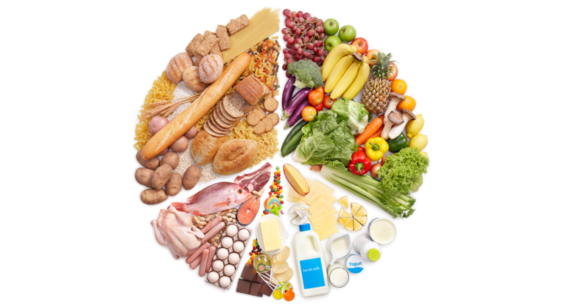
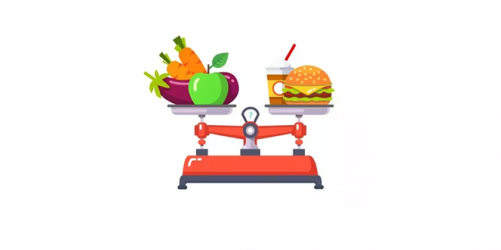

مكونات الوجبة هي العناصر الغذائية الأساسية اللي الجسم بيحتاجها عشان يشتغل صح. تشمل الكربوهيدرات اللي بتعطي
طاقة، والبروتينات اللي بتبني العضلات، والدهون الصحية اللي بتساعد على امتصاص الفيتامينات. كمان لازم تحتوي
الوجبة على فيتامينات ومعادن وألياف لتحسين الهضم والمناعة، والماء عشان يحافظ على ترطيب الجسم.

السعرات الحرارية
السعرات الحرارية هي وحدة قياس الطاقة اللي بيحصل عليها الجسم من الأطعمة والمشروبات. الجسم بيستخدمها عشان يقوم
بوظائفه اليومية زي التنفس، الحركة، والهضم. لما نستهلك سعرات أكثر من اللي بنحرقها، الجسم بخزن الفائض على شكل
دهون.
للتخلص من السعرات الزايدة، لازم نزيد النشاط البدني مثل المشي، الجري، أو التمارين الرياضية. كمان ممكن نتحكم
بالأكل من خلال تقليل السكريات والدهون وتناول وجبات صحية ومتوازنة. شرب الماء بكثرة والنوم الكافي بيساعدوا
كمان على تنظيم الحرق بشكل أفضل

الفوائد الصحية
الفوائد الصحية من تنظيم السعرات ومكونات الوجبة كثيرة ومهمة. أولاً، بتحافظ على وزن صحي وبتقلل خطر السمنة. كمان
بتقلل من فرص الإصابة بأمراض القلب، السكري، وضغط الدم.
وجبة متوازنة بتعطي الجسم الطاقة والتركيز طوال اليوم، وبتقوّي جهاز المناعة. الألياف بتحسن الهضم وبتمنع
الإمساك، والفيتامينات والمعادن بتحافظ على صحة البشرة والعظام. وأخيراً، نمط الأكل الصحي بعزز المزاج وبيخفف
التوتر والإرهاق